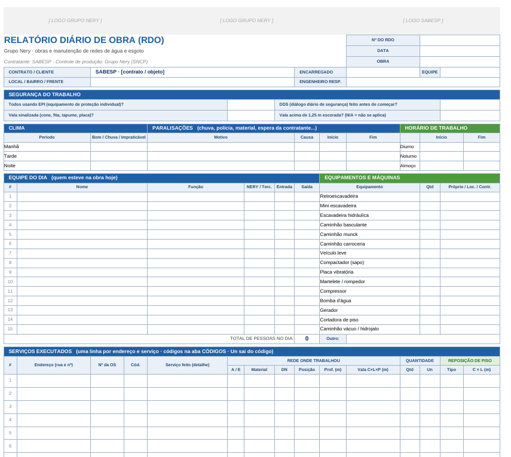

Produção que não vira medição
Serviço executado sem foto, sem OS ou sem boletim fica parado meses e trava o caixa.
Consultoria de gestão de obras · saneamento e construção civil
Organizamos produção, prazo, caixa e rotina da sua empresa com método e ferramentas próprias, para que o que a equipe faz em campo vire medição, recebimento e resultado.
Por que não cumprimos
O que vemos nas obras
Serviço executado sem foto, sem OS ou sem boletim fica parado meses e trava o caixa.
Promessa de pagamento tratada como dinheiro. O buraco aparece na semana em que já não dá para reagir.
Relatos soltos, sem quantidade, sem código e sem padrão. Ninguém sabe quanto cada equipe produziu.
Retornos e refações consomem equipe e material, mas não aparecem em lugar nenhum.
Reuniões sem pauta, papéis implícitos, certidões vencendo sem aviso.
Propostas feitas por oportunidade, sem meta, sem critério de margem e risco de pagamento.
Serviços
Visita, entrevistas em três níveis e linha de base com números: produção, prazo, custo, caixa e qualidade.
Entrega: relatório de 1 página + plano de ação
RDO padrão com a identidade da sua empresa, relato mínimo pelo WhatsApp e consolidação por obra, equipe e serviço.
Entrega: RDO + painel de produção em 30 dias
Compromissos semanais com as equipes, PPC e causas de não cumprimento para atacar o que realmente atrasa.
Entrega: rotina semanal + Pareto de causas
Caixa de 13 semanas, recebíveis separados em devido, prometido e provável, dinheiro preso com dono e prazo, resultado por obra.
Entrega: caixa projetado + painel por obra
Modelo de gestão, papéis claros, manual de rotinas, reuniões fixas e controle fiscal com alerta de validade.
Entrega: manual de rotinas + agenda de gestão
Funil por etapa, metas de 90 dias e critério de go/no-go por margem e risco de pagamento.
Entrega: processo comercial + metas
Atendemos
Método
Base técnica: Lean Construction e Last Planner, PMBOK, valor agregado (EVM), linha de balanço, Teoria das Restrições, PDCA e 5W2H.
Ferramentas próprias

O encarregado manda só o essencial em 2 minutos. O sistema monta o RDO e lista o que faltou cobrar.
RDO | OBRA: Centro | DATA: 04/11 | EQUIPE: E03
PESSOAS: 10
1) Rua A, 76 | OS 1234 | E01 = 1
PAROU: espera da contratante | CLISegurança, clima, equipe, equipamentos, serviços com código, reposição, materiais e fotos, em 2 páginas.
Previsto x realizado, produtividade por equipe, PPC, causas, retrabalho e OS baixadas, em um arquivo por obra.
Dois cenários, recebíveis por confiança e o dia em que o dinheiro acaba, antes que ele acabe.
Cases
Saneamento · Baixada Santista
Pisos industriais · Brasília
Sobre
O Grupo Nery nasceu dentro de obras de saneamento. Conhecemos o lado de quem executa: vala aberta, OS que não baixa, medição que atrasa e caixa que aperta. Nosso trabalho é transformar isso em processo, número e decisão.
João D. Souza · consultor e fundador.
Perguntas frequentes
Não. Começamos com Excel e WhatsApp, que a equipe já usa. Um sistema próprio só entra quando o volume justificar.
O controle de produção fica de pé em cerca de 30 dias. Nas duas primeiras semanas só medimos, para ter a linha de base; depois atacamos os gargalos.
Saneamento é a nossa origem, mas o método serve para qualquer obra repetitiva ou com muitas frentes: redes, pavimentação, manutenção e construção civil.
Linha de base antes de começar, meta escrita, indicador semanal e tradução em dias e em reais a cada trimestre.
Ficam sob sigilo, com cuidado de LGPD: nada de CPF de morador em planilha de produção, e nenhum case publicado sem autorização.
Contato
Conte em poucas linhas o que está travando. Respondemos com os próximos passos para um diagnóstico.